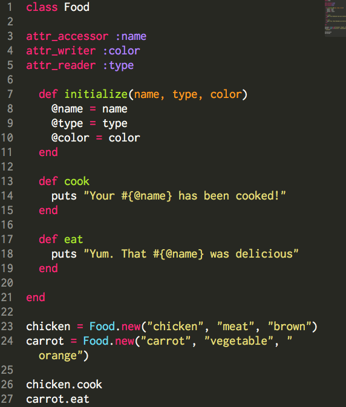
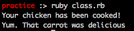

Creating Classes in Ruby
Happy Friday, everyone! This week's focus at Dev Bootcamp was on understanding and creating classes in Ruby. Classes are a great way to organize your information. It's a way to treat your data like a "real" object: You can assign it different attributes and pass specific methods to it. The best way to understand it is to take a look at the code. Here's an example of a Food class I created.
First, I defined a class called Food - you use a capitalized letter in Ruby to define classes. In the "initialize" method, I went ahead and gave food 3 attributes: name, type, and color. Note the attr_accessor, writer, and reader methods just above that. These are shortcut methods- attr_accessor gives the user the ability to re-write and read the attribute. The writer is just for writing, and the reader is just for reading. You want to be very specific about the type of permission to give the user. Here, I gave the user permission to read and change the name, only change but not read the color, and only read but not change the type.
Instance Variables and Instance Methods
One of the most useful features of classes is the ability to define instance variables. These are variables that can only be used within the class; they cannot be used outside of the class. You define an instance variable with the @ sign. You can see above that @name, @type, and @color are all instance variables. What's awesome about these is that you can use these instance variables in all of the methods in your classes. Note that witin both the cook method and the eat method, I use the @name attribute!
Within classes, you define methods that should be applied to the instances of that class - in this case, initialize, cook and eat. In my initialize method, I defined three arguments- name, type and color. When I created a new instance of the class (chicken=Food.new), I added the three attributes for chicken. Then, I called the cook and eat methods. Here's what was printed to the console when I ran the program:
I really enjoyed learning more about classes this week. They're a great way to make your code define real world items and their associated actions. See you next week when we delve into the world of Javascript!